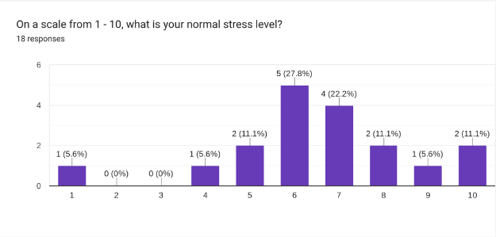
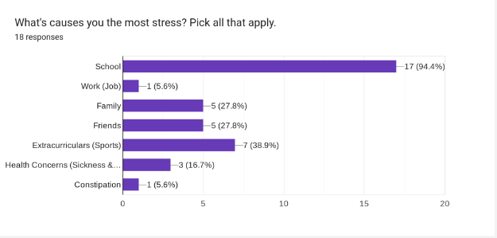

Stress
What is Stress?
Definition of stress:
Stress can be defined as a state of worry or mental tension caused by a difficult situation. Stress is a natural human response that prompts us to address challenges and threats in our lives. Stress is a feeling of emotional or physical tension. It can come from any event or thought that makes you feel frustrated, angry, or nervous. Stress is your body's reaction to a challenge or demand. In short bursts, stress can be positive, such as when it helps you avoid danger or meet a deadline. But when stress lasts for a long time, it may harm your health.
Things that Cause Stress
- Feel under lots of pressure
- Face big changes in your life
- Are worried about something
- Don't have much or any control over the outcome of a situation
- Have responsibilities that you find overwhelming
- Don't have enough work, activities or change in your life
- Experience discrimination, hate or abuse
Ways the body responds in a stressful situation:
- Headaches
- Nausea
- Digestive problems such as constipation, bloating or diarrhea
- Shallow breathing or hyperventilating
- Sweating
- Heart palpitations
- Aches and pains
Early warning signs of stress:
- Eating or sleeping too much or too little
- Anger, feeling edgy or lashing out at others
- Pulling away from people and things
- Not connecting with others
- Lack of energy or always feeling tired
- Having unexplained aches and pains, such as constant stomach aches or headaches
- Feeling helpless or hopeless
- Excessive smoking, drinking, or using drugs, including prescription medications
- Worrying a lot of the time; feeling guilty but not sure why
- Thinking of hurting or killing yourself or someone else
Healthy ways to handle stress:
- Get a good amount of exercise
- Have a good diet and try to limit substance use
- Connect with people
- Try to find a good hobby
- Practice Meditation, Yoga, or stress reduction
- Deep breathing
- Imagery/visualization
- Get a good amount of sleep
- Take a break/vacation
- See a counselor, coach, or therapist
Data About Stress

- Most students feel around a consistent amount of stress, with 27.8% feeling the stress of 6 on a 1-10 scale.
- A surprising percentage shows the same amount of people experience stress levels of 8-10 which is not optimal for students.

- A vast majority of 94% agree that school causes most of their stress.
- The 3 top options that students agree that help them with their stress are eating, watching your phone/TV, and taking breaks.